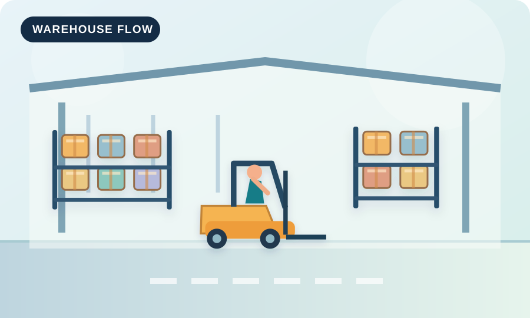

Inventory accuracy
Keep system records aligned with physical stock through labeling, scanning, and routine checks.
An original student website
Explore how a modern warehouse receives, stores, picks, and ships products—with practical ideas for safe and accurate operations.

What matters most
Warehousing is not only about space. It also depends on accurate data, well-planned movement, and safe working practices.
Keep system records aligned with physical stock through labeling, scanning, and routine checks.
Make material travel shorter and clearer so orders move from receiving to shipping smoothly.
Use organized work areas, clear instructions, and team communication to support safe performance.
Discover six illustrated stages of a warehouse process.